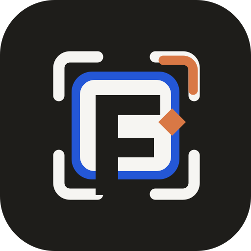

A. Balanced Merge
Most literal blend of both directions. Strong frame, negative F, visible blue proof plate.
Build
Combines 02's architectural matte-orange corner system with 08's more premium negative-space F construction.
Most literal blend of both directions. Strong frame, negative F, visible blue proof plate.
Cleaner and more usable. Bigger F, less blue, orange becomes a controlled build path.

Uses the deep blue more directly. Stronger parent-brand link, slightly busier as an app icon.
Recommendation: B is the best merge. It keeps the premium negative-space F from 08 and the architectural orange signal from 02 without becoming too busy. A is useful for comparison. C is only worth keeping if the SignalOS blue needs to dominate the mark.